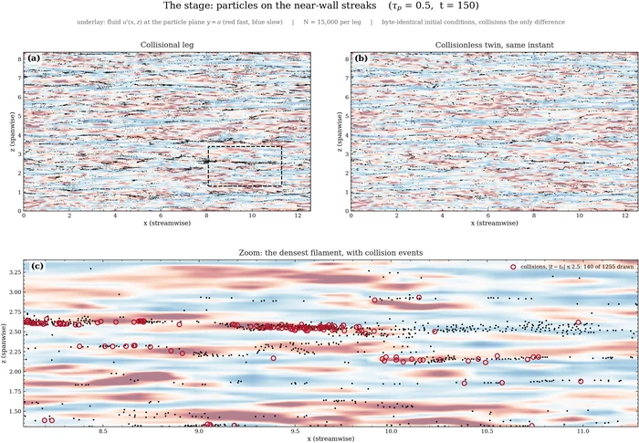

01 Completed: MSc thesis
Particle dynamics and collective transport
I developed a timestep-free, event-scheduled hard-disk solver and a forced kick–drift solver that combines continuous Stokes relaxation with chronologically resolved hard-particle contacts. Matched collision-on and collision-off calculations show that the carrier field establishes the dominant particle organisation and that collisions redistribute this organisation across scales.
How do finite-size interparticle collisions modify the collective organisation generated by inertial transport, from controlled carrier-flow regimes to near-wall turbulence?
Explore completed research